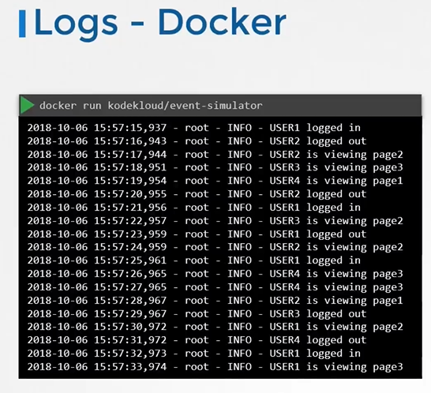

03. Logging & Monitoring
📑 Table of Contents
- 1. Cluster Resource Monitoring
- Key Metrics Architecture
- Metrics Server & cAdvisor
- CLI Commands for Node & Pod Utilization
- 2. Managing Application Logs
- Docker vs. Kubernetes Logging
- Multi-Container Pod Logs
- 3. Advanced Container Logging (Exam Essentials)
- 4. JSONPath Queries & Data Extraction
- 5. Custom Columns & Sorting
- 6. Cluster Event Investigation
- 7. Host & Systemd Journal Logging
1. Cluster Resource Monitoring
Key Metrics Architecture
Kubernetes requires external metric pipelines to track resource usage: - Node-Level Metrics: Node count, status, CPU, memory, disk, and network I/O. - Pod-Level Metrics: Pod count, per-container CPU, and memory consumption. - Storage & Analytics: Metric Server stores metrics in-memory only (no historical data). For historical time-series analytics, solutions like Prometheus, Elastic Stack, Datadog, or Dynatrace are deployed.
[!NOTE] Heapster is deprecated. The lightweight Metrics Server is the official in-cluster metric source.
Metrics Server & cAdvisor
- cAdvisor (Container Advisor): Built into the
kubeletdaemon on each worker node; collects container performance metrics and exposes them via the Kubelet API. - Metrics Server: Discovers nodes, polls cAdvisor over the Kubelet API, aggregates metrics, and serves them via the Metrics API (
metrics.k8s.io).
Installation:
# Minikube
minikube addons enable metrics-server
# Standard / Kubeadm Clusters
kubectl apply -f https://github.com/kubernetes-sigs/metrics-server/releases/latest/download/components.yaml
CLI Commands for Node & Pod Utilization
# View CPU and Memory usage across all nodes
kubectl top node
# View CPU and Memory consumption across all Pods in the current namespace
kubectl top pod
# View Pod metrics across all namespaces
kubectl top pod -A
# View container-level breakdown inside Pods
kubectl top pod --containers
2. Managing Application Logs
Docker vs. Kubernetes Logging
Applications running in containers stream standard output (stdout) and standard error (stderr) to the container engine:
# Run background container
docker run -d --name event-sim kodekloud/event-simulator
# View and follow Docker logs
docker logs -f <container-id>

In Kubernetes, kubelet captures these streams and stores them on the host node (/var/log/pods/).
Multi-Container Pod Logs
# Single container Pod:
kubectl logs <pod-name> -f
# Multi-container Pod (container name is required):
kubectl logs <pod-name> -c <container-name> -f
3. Advanced Container Logging (Exam Essentials)
Essential flags for filtering, crashed containers, and live streaming:
# 1. Stream logs from a specific container in a multi-container Pod
kubectl logs <pod-name> -c <container-name> -f
# 2. View logs from previous crashed container instance (CrashLoopBackOff)
kubectl logs <pod-name> -c <container-name> --previous
# 3. Stream logs with timestamps and limit to the last 50 lines
kubectl logs <pod-name> --tail=50 --timestamps=true -f
# 4. View logs generated within the last 15 minutes or 1 hour
kubectl logs <pod-name> --since=15m
kubectl logs <pod-name> --since=1h
# 5. Tail logs from all containers in a Pod simultaneously
kubectl logs <pod-name> --all-containers=true -f
# 6. Stream logs from all Pods matching a label selector
kubectl logs -l app=web-frontend --all-containers=true --tail=100 -f
4. JSONPath Queries & Data Extraction
The CKA exam frequently tests querying fields with -o jsonpath without external tools like jq.
JSONPath Syntax Cheatsheet
- Root node:
$or. - Wildcard (all elements in array):
[*] - Specific index:
[0] - Filter expression:
[?(@.property == "value")] - Range loop:
{range .items[*]} ... {end} - Output formatting:
{"\n"}(newline),{"\t"}(tab)
Practical Exam Examples
# Get Internal IPs of all worker nodes
kubectl get nodes -o jsonpath='{.items[*].status.addresses[?(@.type=="InternalIP")].address}'
# Output node names and their internal IPs line-by-line
kubectl get nodes -o jsonpath='{range .items[*]}{.metadata.name}{"\t"}{.status.addresses[?(@.type=="InternalIP")].address}{"\n"}{end}'
# Get container images used by all Pods in default namespace
kubectl get pods -o jsonpath='{.items[*].spec.containers[*].image}'
# List all Pod names and assigned nodes across all namespaces
kubectl get pods -A -o jsonpath='{range .items[*]}{.metadata.namespace}{"\t"}{.metadata.name}{"\t"}{.spec.nodeName}{"\n"}{end}'
# Get storage capacity of all PersistentVolumes
kubectl get pv -o jsonpath='{range .items[*]}{.metadata.name}{"\t"}{.spec.capacity.storage}{"\n"}{end}'
# Get Operating System image of all nodes
kubectl get nodes -o jsonpath='{.items[*].status.nodeInfo.osImage}'
5. Custom Columns & Sorting
Clean tabular presentation without complex JSONPath templates:
Custom Columns Table
# Display Pod name, namespace, node, and IP
kubectl get pods -A -o custom-columns=NAME:.metadata.name,NAMESPACE:.metadata.namespace,NODE:.spec.nodeName,IP:.status.podIP
# Display Node name, CPU capacity, and OS image
kubectl get nodes -o custom-columns=NODE:.metadata.name,CPU:.status.capacity.cpu,OS:.status.nodeInfo.osImage
Sorting Output
# Sort Pods by creation timestamp (oldest first)
kubectl get pods -A --sort-by=.metadata.creationTimestamp
# Sort Nodes by CPU capacity
kubectl get nodes --sort-by=.status.capacity.cpu
# Sort PersistentVolumes by capacity
kubectl get pv --sort-by=.spec.capacity.storage
6. Cluster Event Investigation
Cluster events record lifecycle changes, scheduling actions, and failures:
# 1. View all events across all namespaces sorted by time
kubectl get events -A --sort-by=.metadata.creationTimestamp
# 2. Watch cluster events in realtime
kubectl get events -A -w
# 3. Filter only Warning events (FailedScheduling, BackOff, Unhealthy)
kubectl get events -A --field-selector type=Warning
# 4. View events for a specific Pod or Deployment
kubectl get events -n <namespace> --field-selector involvedObject.name=<pod-name>
7. Host & Systemd Journal Logging
When control-plane or node daemons fail before the API server can respond:
# 1. Kubelet daemon logs on the node
sudo journalctl -u kubelet -n 100 --no-pager
sudo journalctl -u kubelet -f
# 2. Containerd runtime logs
sudo journalctl -u containerd -n 100 --no-pager
# 3. Static Pod raw log files on disk (bypassing API server)
ls -la /var/log/pods/
ls -la /var/log/containers/